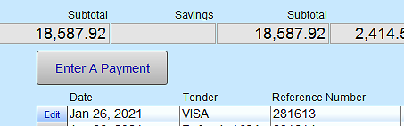
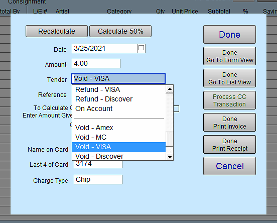
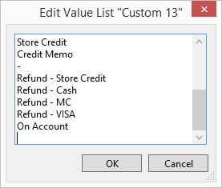
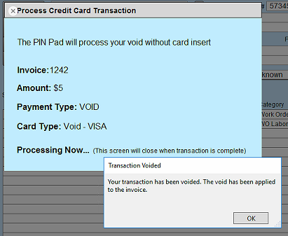
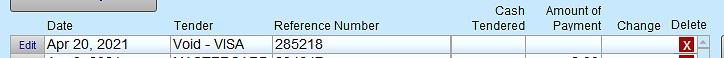

FrameReady Pay
Void a Credit Card Payment
FrameReady’s new Credit Card processing integration with Payment Logistics now supports 2 new methods of payment: Void and Refund.
-
For use with Fortis Integration
-
See also: Process a Credit Card Refund
About Void Transactions
-
A Void completely cancels the transaction from Payment Logistics and automatically returns the amount of the sale to the users Credit Card.
-
The Void method of payment can only be used on transactions that are in your current batch. This is typically set to 24 hours but you can customize how long your current batch stays alive for with payment logistics if you prefer longer or shorter than 24 hours.
How to Process a Credit Card Void Transaction
This can be done within a 24 hour windows of the payment being processed.
-
Locate the transaction that you would like to void: do this by going to the invoice in question and click the Data Entry button.

-
In the Payments portal, locate the payment you intend to void.

-
Click the Edit button next to the payment you would like to void.
-
Click in the Tender field, choose the option of "Void - your card type" from the dropdown list.
There are multiple 'Void' options; select the option that matches the card type from your original transaction.

Tip: If you do not see an option for Void: scroll to the bottom of the list and click Edit... A window appears where you can add a void entry for each credit card you process, e.g. Void -- VISA, Void -- MC, Void -- Discovery, etc.

-
After you have selected the correct Void tender, click the Process CC Transaction button (right hand side of the payment screen).
-
The Credit Card processing window (which activates the PIN pad listener) opens.
While processing Voids, the PIN pad will not go to a scan card screen, but will stay on the Payment Logistics home page.
You do not need to insert the original card for the transaction into the PIN pad to process Voids or Refunds. -
When the void has been processed, you will receive a pop up window on the screen that says "Your transaction has been voided. The void has been applied to the invoice."

-
Click the OK button.
The process will continue on to print the receipt or invoice based on what you have selected in the Invoice settings.
You will see the Voided transaction on the receipt or invoice with an amount of $0 now. After the receipt or Invoice has been printed you will be returned to the invoice screen and you should see the voided payment in the payments portal.

© 2023 Adatasol, Inc.